https://gall.dcinside.com/mgallery/board/view/?id=singlebungle1472&no=2688271&exception_mode=recommend&page=1
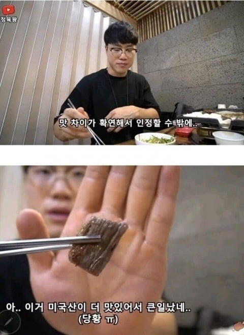
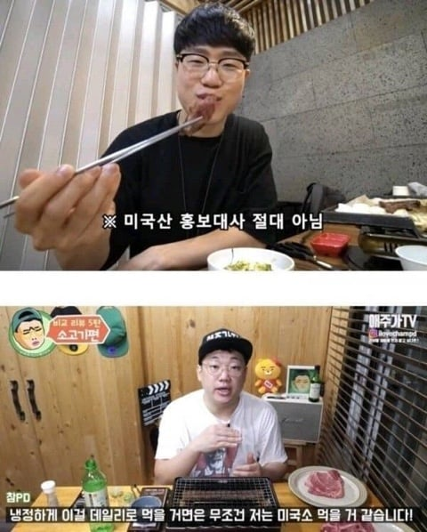
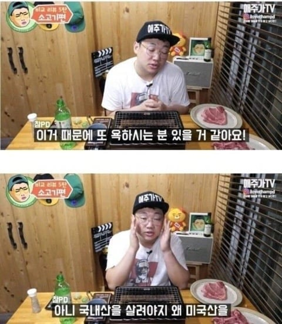
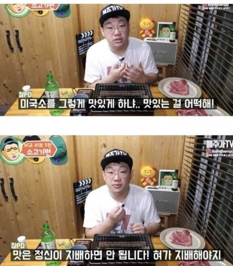
유튜버들의 의견을 가져와서 미국산 소고기가 한우보다 맛있다고 말한 것처럼 적어 놓은 글이다. 그렇다면 과연 진실은 어떨까?
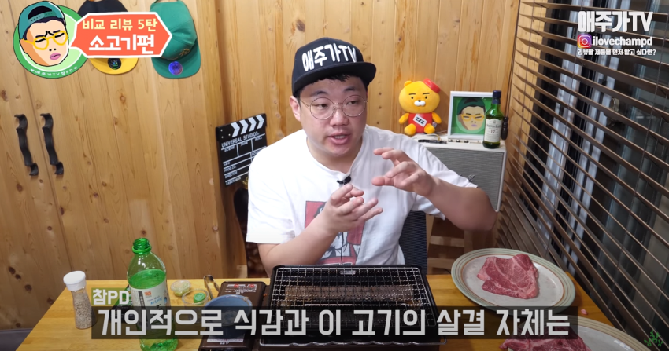
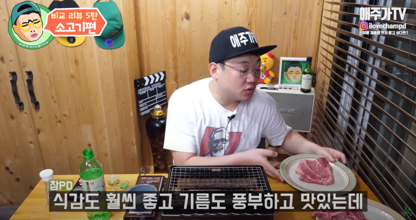
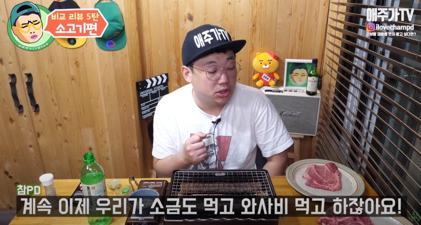
국산이 확실히 맛은 더있다. 하지만 계속 번갈아 먹다보니 큰 차이를 못느끼겠다. 가격차이가 많이 나니 본인이라면 가성비 좋은 미국산을 먹겠다라고 발언한다. 이런 영상을 짜집기로 미산이 최고라고 소신발언한 것처럼 만들어놨다
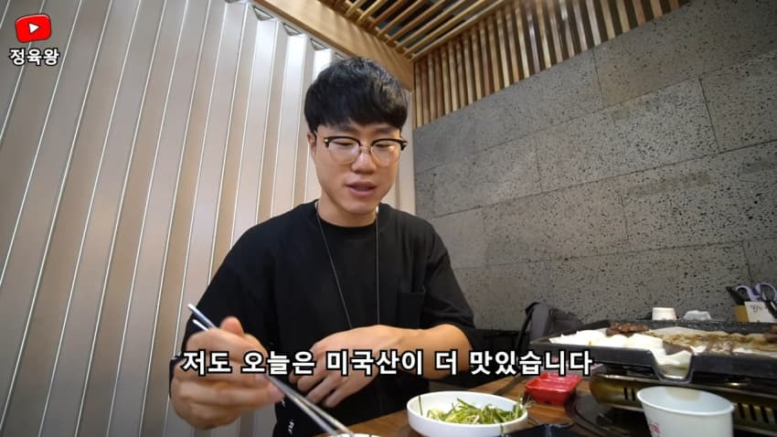
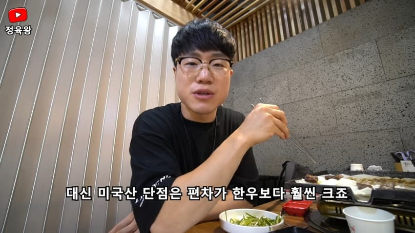
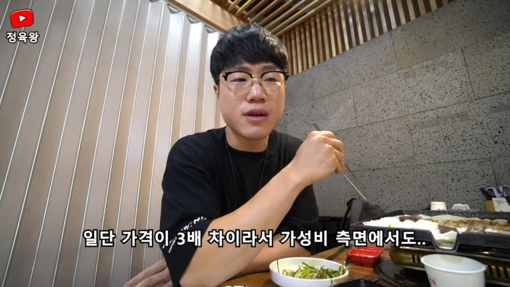
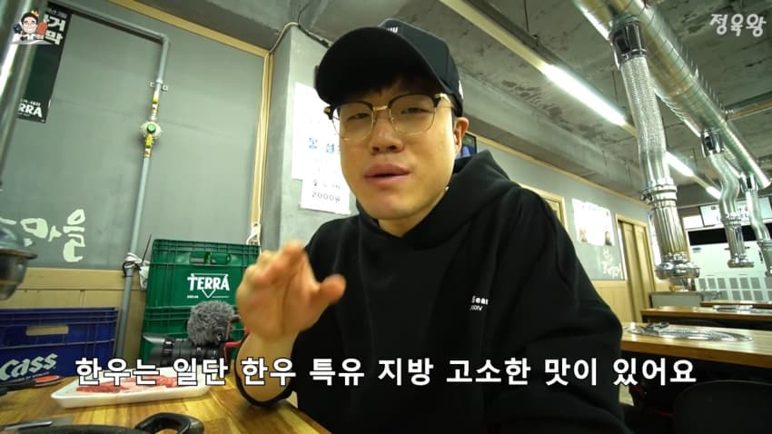
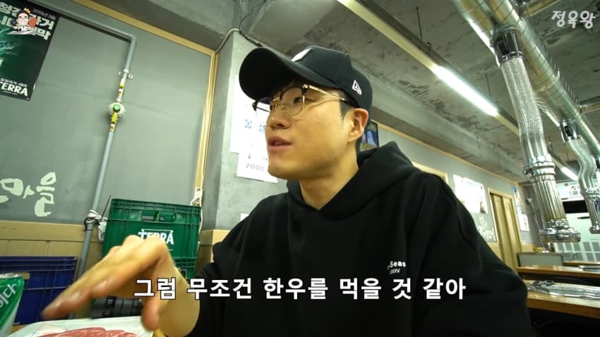
평균적으로는 한우가 더 맛있다. 하지만 오늘 먹은 고기는 미국산이 더 맛있었다. 1년 뒤 같은 컨텐츠를 또 진행했을 때에도 확연히 한우가 맛있으며 대신 가성비는 미국산, 맛은 한우라고 재차 이야기한다.
결론 = 원글 영상에도 한우가 평균적으로 더 맛있다고 언급, 이후 영상에서도 한우가 더 맛있다고 하였다.
3번=미국산
분명 원글에는 맛이 없다고 했던 한우였지만, 영상을 보니 미국산 소고기가 제일 맛이 없다고 한다. 그래도 호주산이 최고고 한우도 맛없다고 한것은 맞으니 이건 구라는 아니다
한우에 무슨 원한이 있어서 저런 주작을 하는 것일까?
댓글
댓글 보관 대기 중입니다. 원문 응답 오류가 있으면 다음 실행에서 다시 수집합니다.